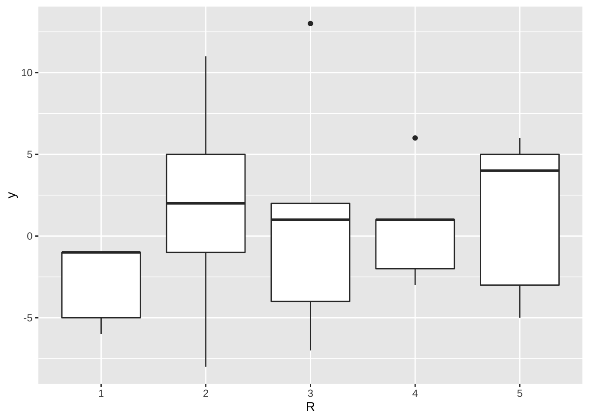

제 2 장 라틴정방설계
2.1 실험 계획: 예제 5.2 - 로켓 추진체
5가지의 로켓 추진체(A, B, C, D, E)의 성능을 비교하기 위하여 라틴정방계획을 사용한 실험이다.
- 행블럭: 5개의 연료 (
R, \(\rho\)) - 열블럭: 5명의 기사 (
C, \(\gamma\)) - 처리: 5가지의 로켓 추진체 (
trt, \(\tau\))
\[ x_{ijk} = \mu+ \rho_i + \gamma_j + \tau_k + e_{ijk }\]
2.2 자료의 구성
예제 5.2에 있는 자료를 분석을 위하여 데이터프레임으로 만들어 보자.
trt <- c("A", "B", "C", "D", "E",
"B", "C", "D", "E", "A",
"C", "D", "E", "A", "B",
"D", "E", "A", "B", "C",
"E", "A", "B", "C", "D" )
trt <- factor(trt)
R <- factor(rep(1:5, each=5))
C <- factor(rep(1:5, times=5))
y <- c( -1,-5, -6, -1, -1,
-8, -1, 5, 2, 11,
-7, 13, 1, 2, -4,
1, 6, 1, -2, -3,
-3, 5, -5, 4, 6)
df<- data.frame(trt, R, C, y)
df## trt R C y
## 1 A 1 1 -1
## 2 B 1 2 -5
## 3 C 1 3 -6
## 4 D 1 4 -1
## 5 E 1 5 -1
## 6 B 2 1 -8
## 7 C 2 2 -1
## 8 D 2 3 5
## 9 E 2 4 2
## 10 A 2 5 11
## 11 C 3 1 -7
## 12 D 3 2 13
## 13 E 3 3 1
## 14 A 3 4 2
## 15 B 3 5 -4
## 16 D 4 1 1
## 17 E 4 2 6
## 18 A 4 3 1
## 19 B 4 4 -2
## 20 C 4 5 -3
## 21 E 5 1 -3
## 22 A 5 2 5
## 23 B 5 3 -5
## 24 C 5 4 4
## 25 D 5 5 6함수 tabs()는 모형식을 이용하여 다음과 같이 열과 행으로 구성된 자료를 보여줄 수 있다.
xtabs(y~ R + C, data = df)## C
## R 1 2 3 4 5
## 1 -1 -5 -6 -1 -1
## 2 -8 -1 5 2 11
## 3 -7 13 1 2 -4
## 4 1 6 1 -2 -3
## 5 -3 5 -5 4 62.3 시각적 분석
먼저 로켓 추진체, 즉 처리별로 자료의 분포를 보자. 추진체 B 와 C 가 다른 추진체들 보다 관측값이 작게 나오는 것을 알 수 있다.
df %>%
ggplot() +
aes(x = trt , y = y) +
geom_boxplot() 원료(R) 뭉치별로 자료의 분포를 보면 큰 차이는 보이지 않는다.
df %>%
ggplot() +
aes(x = R , y = y) +
geom_boxplot() 
기사(C) 별로 자료의 분포를 보면 약간의 차이가 보인다.
df %>%
ggplot() +
aes(x = C , y = y) +
geom_boxplot() 2.4 분산분석
이제 라틴정방계획법으로 얻은 자료에 대래 분산분석을 적용해 보자.
model<- aov(y ~ trt + R + C, data=df)
summary(model)## Df Sum Sq Mean Sq F value Pr(>F)
## trt 4 330 82.5 7.73 0.0025 **
## R 4 68 17.0 1.59 0.2391
## C 4 150 37.5 3.52 0.0404 *
## Residuals 12 128 10.7
## ---
## Signif. codes: 0 '***' 0.001 '**' 0.01 '*' 0.05 '.' 0.1 ' ' 1위의 분산분석표에서 추진체(처리)의 효과를 검정하는 F-통계량의 값은 7.7344 이고 p-값은 0.0025이다. 따라서 5% 유의수준으로 귀무가설을 기각하며 추진체에 따라서 성능이 유의하게 다르다.
2.5 라틴정방의 구축
교과서 5.3절에서는 라틴정방 계획으로 실험을 하는 경우 처리를 랜덤하게 배정하는 방법을 설명하고 있다.
패키지 agricolae 에 포함된 함수 design.lsd()를 이용하면 다음과 같이 처리를 랜덤하게 배정해준다.
mytrt <- factor(c("A", "B", "C", "D", "E"))
mytrt## [1] A B C D E
## Levels: A B C D Edesign.lsd(mytrt)$sketch## [,1] [,2] [,3] [,4] [,5]
## [1,] "E" "A" "B" "D" "C"
## [2,] "B" "C" "D" "A" "E"
## [3,] "C" "D" "E" "B" "A"
## [4,] "A" "B" "C" "E" "D"
## [5,] "D" "E" "A" "C" "B"함수 design.lsd()는 실행할 때마다 랜덤하게 배정하기 때문에 기록을 위해서 랜덤 seed 를 지정하면
나중에도 동일한 계획을 얻을 수 있다.
design.lsd(mytrt, seed = 1234 )$sketch## [,1] [,2] [,3] [,4] [,5]
## [1,] "C" "B" "E" "A" "D"
## [2,] "A" "E" "C" "D" "B"
## [3,] "B" "A" "D" "E" "C"
## [4,] "D" "C" "A" "B" "E"
## [5,] "E" "D" "B" "C" "A"